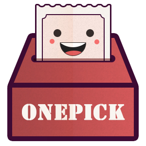

<ion-view view-title="cupsue">


<!----------------head---------------->
  <ion-content class="card" style="margin-top: 0">
    <div class="mypage-head">
      <div class="avatar" >
        
        <h6>投稿者ID</h6>
      </div>
      <div class="tabs  tabs-striped tabs-top" id="tab-navi"">
        <a class="tab-item active"
         ng-click="votesShow()"
         ng-class="{'active': btnActive}">我的问题</a>
      <span style="color: #ffffff;">|</span>
        <a class="tab-item "
         ng-click="questionShow()" ng-class="{'active': !btnActive}">我的投票</a>
      </div>
    </div>


    <div ng-show="!myVar">

      <div class="list card" ng-repeat="vote in votes">
        <div class="item item-text-wrap">
          <h3>{{ vote.content }}</h3>
          <p>{{ vote.date }}</p>
        </div>
      </div>
    </div>

    <div ng-show="myVar">
      <div class="devider">
        <p><strong>正在进行的问题</strong></p>
      </div>
      <div class="card">
        <div class="item item-body">
          <ion-slide-box active-slide="myActiveSlide">
            <ion-slide ng-repeat="actQuestion in actQuestions">
              <div class  ="box blue">
                <h3>{{ actQuestion.content }}</h3>
                <p>还有{{ actQuestion.timeLeft }}小时结束
                  <span>  已有{{ actQuestion.votePeople }}人投票</span>
                </p>
                <div class="row">
                  <div class="col">
                    <p>A.{{actQuestion.options.A}}</p>
                    <div class="item item-avatar-left">
                      

                    </div>
                    <progress max="100" value="{{actQuestion.values.A}}"> </progress>
                  </div>
                  <div class="col">
                    <p>B.{{actQuestion.options.B}}</p>
                    <div class="item item-avatar-left">
                      

                    </div>
                    <progress max="100" value="{{actQuestion.values.B}}"> </progress>
                  </div>
                </div>
              </div>
            </ion-slide>
          </ion-slide-box>
        </div
      </div>

      <div class="devider">
        <p><strong>历史问题</strong></p>
      </div>


        <!--timeline-->
        <div class="item item-body timeline-content" ng-repeat="oldQuestion in oldQuestions">
          <div class="containerT">
            <div class="timeline-block">
              <div class="markerT"></div>
              <div class="list card">
                <span>{{ oldQuestion.date }}</span>
                <p>{{ oldQuestion.content }}</p>
        </div>
      </div>
        </div>
    </div>
    </div>


  </ion-content>
</ion-view>
